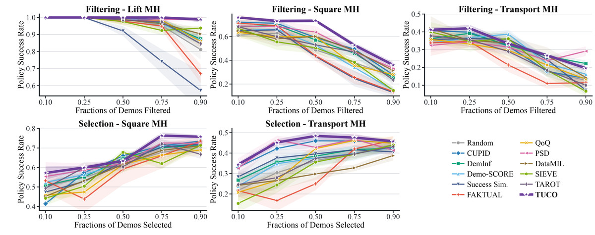
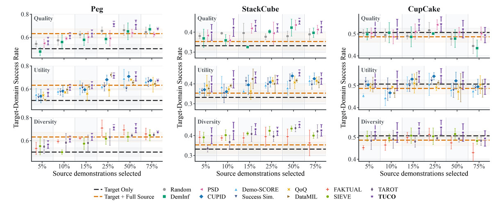

Abstract
Simulation demonstrations can supplement scarce real-world data for robot policy co-training. However, the value of using data curation to actively select these demonstrations for sim-to-real co-training remains underexplored. Existing curation methods also lack a unified criterion for measuring trajectory-level utility and set-level coverage from closed-loop target behavior. To address these gaps, we present the first systematic study of data curation for sim-to-real robot policy co-training and propose Trajectory-level Utility and set-level Coverage Optimization (TUCO). TUCO uses influence functions to trace how each source demonstration affects target-domain scoring rollouts. Our key insight is that these effects can be decomposed into an overall contribution to target return and variation across rollouts, providing a common closed-loop basis for measuring trajectory utility and set coverage. We further propose a performance-aligned subset optimizer that combines these measures in a unified curation objective to reduce redundancy and select complementary demonstrations. Extensive experiments on RoboMimic and OmniReset establish the value of active simulation data curation for sim-to-real policy co-training and show that TUCO achieves state-of-the-art performance across single-simulator, sim-to-sim, and sim-to-real settings.
Method
Sim-to-real co-training combines a large pool of simulated demonstrations with a small set of real ones. Under a domain gap, these simulated demonstrations differ in their value to the target policy, and some are redundant or harmful. TUCO selects a subset of them according to their effect on the target policy's closed-loop performance, estimated with influence functions on target-domain rollouts.

- A. Score each simulated demonstration against target rollouts. We collect rollouts of a base policy in the target domain, each with its return. For each simulated demonstration, an influence function answers a counterfactual question: if this demonstration carried more weight in training, which of those rollouts would become more likely and which less? The answers form the demonstration's influence profile, one number per rollout.
- B. Read two quantities off each profile. Projecting the profile onto the rollout returns gives the demonstration's utility, its net push toward success. What remains is its coverage vector, the pattern of which individual rollouts it helps. Two demonstrations with equal utility but different coverage vectors teach the policy different things; two with similar vectors are redundant.
- C. Select a set, not a ranking. We discard candidates whose influence points away from success, then add demonstrations one at a time, preferring high utility and a coverage vector that adds a direction the chosen set does not yet span. The selected demonstrations are then co-trained with all target demonstrations (panel D).
Real-World Experiments
TUCO lifts real-robot success from 25.8% to 85.8% with only 10 real demonstrations per task. Each task is learned from only 10 teleoperated real demonstrations, far too few to train a policy on their own (16.7% average success). We then add simulated demonstrations of the same task: either all 1,200 generated in simulation, or 600 of them chosen by a curation method, always at the same real-to-simulation mixing ratio. Every policy is evaluated over 40 trials on a Franka arm. The question is whether choosing those 600 well can turn 10 real demonstrations into a working policy.
Real-robot success rate
- TUCO (ours)
- CUPID
- DataMIL
- FAKTUAL
- Success Similarity
- Random
- All sim data (10 real + 1,200 sim)
- 10 real demos only
Show values
| Method | Peg | StackCube | CupCake | Average |
|---|---|---|---|---|
| TUCO (ours) | 82.5 | 75.0 | 100.0 | 85.8 |
| CUPID | 75.0 | 65.0 | 80.0 | 73.3 |
| DataMIL | 22.5 | 65.0 | 100.0 | 62.5 |
| FAKTUAL | 10.0 | 75.0 | 100.0 | 61.7 |
| Success Similarity | 5.0 | 50.0 | 60.0 | 38.3 |
| Random | 7.5 | 57.5 | 12.5 | 25.8 |
| All sim data (10 real + 1,200 sim) | 17.5 | 40.0 | 20.0 | 25.8 |
| 10 real demos only | 15.0 | 35.0 | 0.0 | 16.7 |
- Curation matters more than quantity. With 10 real demonstrations, adding all 1,200 simulated demonstrations lifts average success from 16.7% to 25.8%, a random half gives the same 25.8%, and the half selected by TUCO gives 85.8%.
- Closed-loop influence is what transfers. On Peg, the most contact-intensive task, criteria based on similarity, validation loss, or diversity stay at or below 22.5%, while the two influence-based methods, CUPID and TUCO, reach 75.0% and 82.5%.
- Coverage adds to utility. TUCO improves over utility-only ranking (CUPID) on every task, by 12.5 pp on average.
Insert the peg
Stack the cube
Place the cupcake
The TUCO column shows a successful trial; the baseline columns each show a failure case.
Simulation Experiments
Real-robot trials are expensive, so we first validate the curation criterion in two simulated settings with the same protocol. A base policy is rolled out in the target domain, each method selects a subset of source demonstrations under a fixed budget, a fresh policy is trained on that subset together with all target data, and success is measured in the target domain, averaged over three seeds.
Single-simulator (RoboMimic). Source and target are the same simulator, so this setting isolates the curation criterion from any domain gap. Following CUPID's protocol on Lift, Square, and Transport, TUCO is best or tied-best in 18 of 25 task–budget settings, and matches training on all data on Lift with only 25% of it.


Sim-to-sim (IsaacSim to MuJoCo). Demonstrations are generated in one simulator and the policy is evaluated in another, a controlled stand-in for the sim-to-real gap. On the same three tasks as the real-robot study, TUCO is best in 15 of 18 settings and above random selection in all 18. Adding the full IsaacSim pool even hurts CupCake, whereas a curated subset gives the best result on every task.


BibTeX
@article{tuco2026,
title = {{TUCO}: Curating Simulation Demonstrations for Sim-to-Real Robot Policy Co-Training},
author = {Zhu, Ning and Zhao, Mengfei and Tang, Yikai and Sun, Zhangyujie and Li, Peihao and Ni, Dongyue and Jia, Jindou and Yang, Jianfei},
journal = {arXiv preprint arXiv:2610.05407},
year = {2026}
}